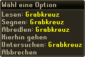
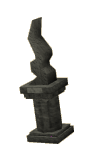
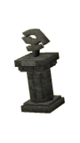

")
Der Tod in RuneScape
Was passiert, wenn mein Charakter stirbt? | Werde ich Gegenstände verlieren? | Kann ich meine Gegenstände wiederbekommen? | Bessere Grabsteine | Grabsteine auf kostenlosen Welten
Was passiert, wenn mein Charakter stirbt?

Davor müsst ihr keine Angst haben, denn euer Charakter wird immer wieder kerngesund ins Leben zurückgerufen (obwohl ihm danach einige Gegenstände fehlen könnten, aber mehr dazu später).
Wenn ihr auf RuneScape noch neu seid, werdet ihr nach eurem Tod das Haus des Gevatter besuchen. Keine Sorge, der Mann ist unerwartet hilfsbereit und freundlich. Er wird euch mehr über den Tod erzählen und darüber, was euch danach erwartet. Normalerweise kehrt euer Charakter nach seinem Tod in den Schlosshof von Lumbridge zurück. Spieler der Mitglieder-Version können ihren Wiederbelebungsort aber auch an eine für sie geeignetere Stelle verlegen, wenn sie die entsprechenden Abenteuer abgeschlossen haben.
- Um in Falador wiederbelebt zu werden, müsst ihr das Abenteuer 'Nachwuchsförderung' abschließen.
- Um in Camelot wiederbelebt zu werden, müsst ihr das Abenteuer 'Der Fall der Sinclairs' abschließen.
- Um beim Krieg der Seelen wiederbelebt zu werden, müsst ihr das Abenteuer 'Nomads Requiem' abschließen.
Werde ich Gegenstände verlieren?
Falls euer Charakter bezwungen wird, behaltet ihr normalerweise nur eure drei wertvollsten Gegenstände. Ihr solltet beachten, dass der Wert vom Spiel festgelegt wird, nicht vom Preis, den andere Spieler euch für einen Gegenstand anbieten. Alle anderen Gegenstände fallen dort, wo ihr gestorben seid, auf den Boden.
Um herauszufinden, welche Gegenstände ihr behaltet, müsst ihr nur das Spielfenster 'Geschützte Gegenstände nach einem Tod' öffnen. Im Artikel Steuerung - Das Inventar erhaltet ihr weitere Informationen.
Gegenstände, die ihr auf diese Art fallen lasst, werden für eine bestimmte Zeit für andere Spieler unsichtbar sein und von einem Grabstein beschützt (siehe unten).
|
Höllenschlund-/Spielerkampf-Schädel |
Es gibt Ausnahmen, in welchen ihr nicht 3 Gegenstände behaltet, die ihr im Kopf behalten solltet: wenn ihr 'geschädelt' werdet bei Betreten des Höllenschlunds oder wenn ihr beim Einloggen auf eine Spielerkampf- oder Wildis-Welt geschädelt werdet. In diesen beiden Fällen verliert ihr ALLE eure Gegenstände, wenn ihr sterbt. Wenn ihr euch allerdings auf einer 'Wildnis-Welt (+1 Gegenstand)' befindet (unter Themenwelten findet ihr eine Liste dieser Welten), behaltet ihr beim Tod euren wertvollsten Gegenstand.
Falls eure Fertigkeit Gebet auf der entsprechenden Stufe ist, könnt ihr das Gebet Gegenstandsschutz aktivieren und behaltet einen zusätzlichen Gegenstand, wenn ihr sterbt. Falls ihr also unter normalen Umständen bezwungen werdet, würdet ihr daher vier Gegenstände behalten und wenn ihr geschädelt seid, behaltet ihr einen Gegenstand. Dieses Gebet funktioniert auf Spielerkampf- und Wildnis-Welten allerdings nicht.
Kann ich meine Gegenstände wiederbekommen?
Wenn ihr in einem besonderen Bereich sterbt, beispielsweise an einem bestimmten Punkt in Abenteuern, erscheint euer Grabstein neben dem Eingang zu diesem Gebiet. Dies gibt euch die Chance, eure Gegenstände an euch zu nehmen, ohne zu riskieren, dass ihr noch einmal sterbt.
Wenn die Zeit abläuft, zerbröckelt euer Grabstein allmählich. Falls sich ein euch freundlich gesinnter Spieler in der Nähe befindet, kann dieser den Grabstein rechtsklicken, um ihn zu 'reparieren'. Dazu benötigt derjenige Gebet mindestens auf Stufe 2. Nach der Reparatur, welche 5 Gebetspunkte kostet, wird euer Grabstein weitere 5 Minuten an Ort und Stelle bleiben. Falls der andere Spieler weniger als 5 Gebetspunkte hat, bleibt der Grabstein entsprechend kürzer erhalten.
 Alternativ kann ein anderer Spieler euren Grabstein 'Segnen', um ihn mit der Kraft seines Glaubens für bis zu eine Stunde zu beschützen. Dies benötigt eine Stufe von mindestens 70 in Gebet und kostet bis zu 70 Gebetspunkte; es wird aber die Gebetspunkte nicht unter 10 senken.
Die Dauer, die der gesegnete Grabstein stehen bleibt, hängt davon ab, wie viele Gebetspunkte der Spieler zur Verfügung hat und wie lange euer Tod zurückliegt. Beachtet, dass ein Grabstein nach einer Stunde zerfällt, unabhängig davon, wann er gesegnet wurde. Er wird sich außerdem auflösen, wenn ihr erneut besiegt werdet und mehr Gegenstände fallen lasst. Eure Gegenstände bleiben jedoch möglicherweise noch etwas länger liegen, wenn der Grabstein kurz vorher repariert oder gesegnet wurde. Wenn eure Verbindung abbricht oder ihr euch ausloggt, wird der Countdown bis zur Zerstörung des Grabsteins fortgesetzt.
Um es euch einfacher zu machen, eure Gegenstände wiederzuerhalten, könnt ihr (und nur ihr) euren Grabstein rechtsklicken und 'Abreißen' auswählen. Danach habt ihr ausreichend Zeit, eure Gegenstände aufzusammeln.
Verbesserte Grabsteine
Um euren Grabstein zu wechseln, müsst ihr das Abenteuer 'Der ruhelose Geist' abschließen. Danach könnt ihr mit Pater Aereck in der Kirche von Lumbridge sprechen und ihm eine Spende geben, um folgende Optionen zu erhalten: teurere Grabsteine schützen eure Gegenstände länger, wie ihr in der Spalte 'Dauer' sehen könnt:
Beachtet, dass die Art des Grabsteins nicht die Dauer verlängert, die er durch Reparaturen oder Segnung bestehen bleibt.
Die Art eures Grabsteins bleibt erhalten, bis ihr einen neuen kauft.
| Stil | Preis | Dauer | Stil | Preis | Dauer | |
 Gedenktafel |
Keiner | 3 Minuten |  Flagge |
50 GM | 3 Minuten | |
 Kleiner Grabstein |
500 GM | 3 Minuten |  Verzierter Grabstein |
5.000 GM | 4 Minuten |

| Stil | Preis und Voraussetzung | Dauer | Stil | Preis und Voraussetzung | Dauer | |
Gedenktafel |
Keiner | 3 Minuten |  Quelle des Lebens |
50.000 GM | 5 Minuten | |
 Steinernes Denkmal |
50.000 GM | 5 Minuten |  Symbol des Saradomin |
50.000 GM | 5 Minuten | |
 Symbol des Zamorak |
50.000 GM | 5 Minuten |  Symbol des Guthix |
50.000 GM | 5 Minuten | |
|  Symbol des Bandos |
50.000 GM Land der Goblins |
5 Minuten |  Symbol des Armadyl |
50.000 GM Der Tempel von Ikov |
5 Minuten | |
 Uraltes Symbol |
50.000 GM Der Wüstenschatz |
5 Minuten |  Jenseitsengel |
500.000 GM | 6 Minuten |
Wird mein Grabstein auf freien Welten funktionieren?
Ja! Euer Grabstein sieht immer gleich aus, auch wenn ihr auf einer freien Welt spielt. Weil viele Leute dort nicht die gleiche Auswahl an Grabsteinen haben, wird euch euer eigener viel leichter auffallen, wenn ihr in einer Gegend seid, in der sehr viele Spieler gerade das Zeitliche gesegnet haben.

Weitere Artikel in So geht's los!
|
|